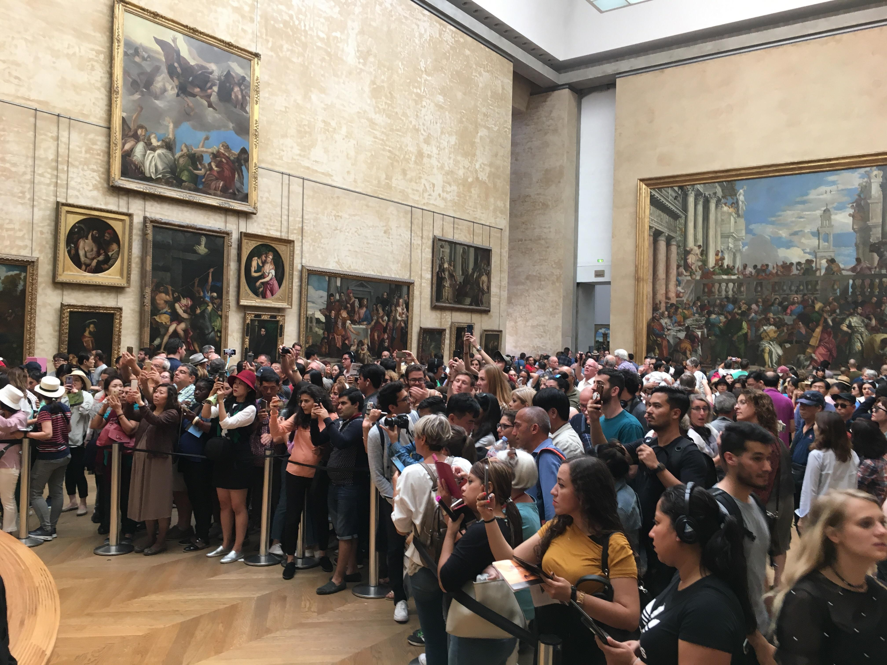

I thought that it was quite obvious that the way people perceive art depends on the context, environment, and our knowledge. Looking at a picture of a glass mosaic on Google probably feels different from looking at it in a church during mass. If compared to something like a movie, removing the music or not understanding the historical events related to it would result in a different reaction, likely a weaker one. If I broke into the Louvre Museum to look at the Mona Lisa, I would probably wonder why I broke in for this. If I looked at the Mona Lisa with the public, I would probably hate the experience even more while being crushed by a crowd and having my vision obscured with phones. That being said, I think the price of paintings are stupid.
Episode 2 was somewhat informative. It pointed out something I never noticed in European oil paintings involving undressed women, partially because I find them uninteresting and also because I feel like other people in the museum will think I’m a pervert if I look at the painting for a while. Most of them reflect Europe’s attitude towards women and objectification at the time, which I had not noticed unlike the pride, religion, and wealth, which was all fairly obvious.

Episode 4 was interesting I guess? This is all speaking from personal experience so I may just be an exception, but I think things like advertisements don’t make a person believe that the purchase of the product will change their life. There might be a small temptation, but it probably won’t end up with a person buying the product. I don’t remember any of my purchases in the past few months being made because of an advertisement. The advertisements may something about the dreams of most people, but I don’t think they themselves do much, at least for people who have decent income and can manage their money. I don’t know what to take away from the part in which Berger talks about the magazine and refugees. I’m not sure what the main point is for that part.